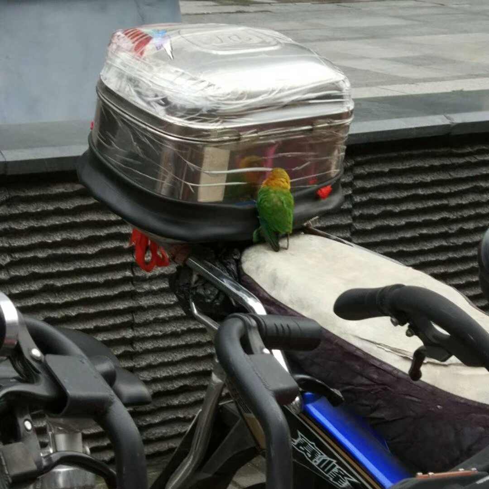
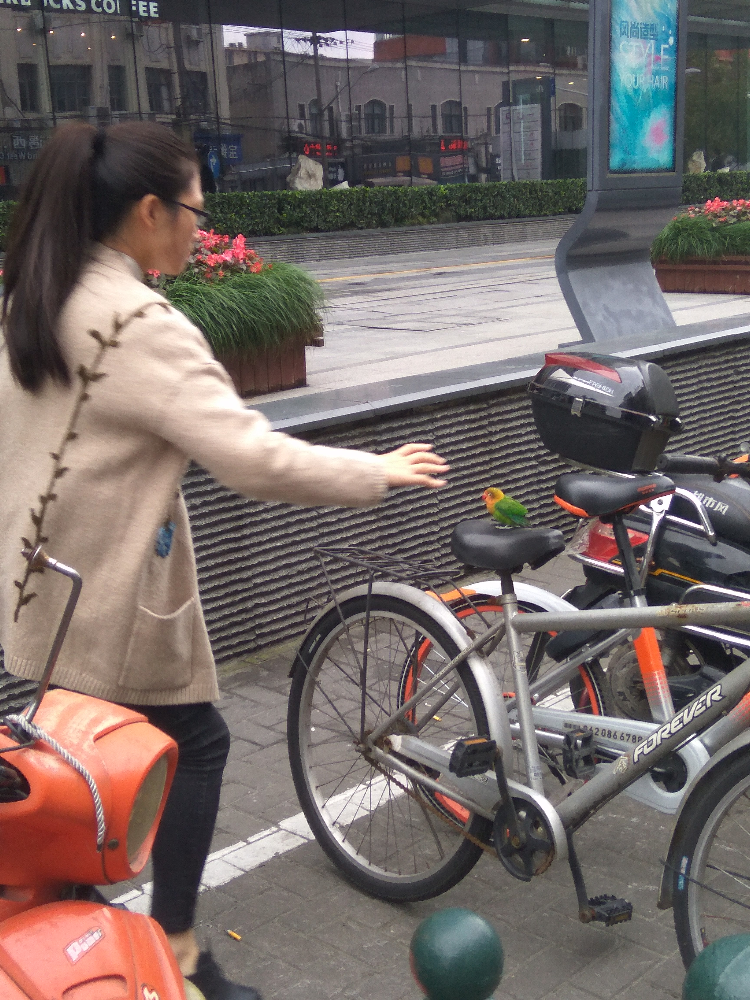
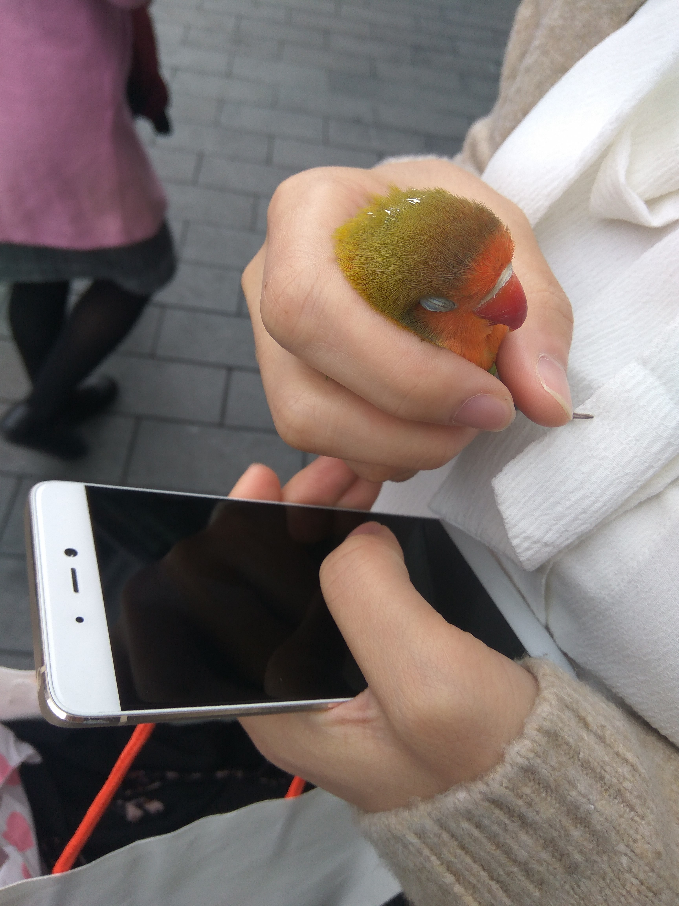
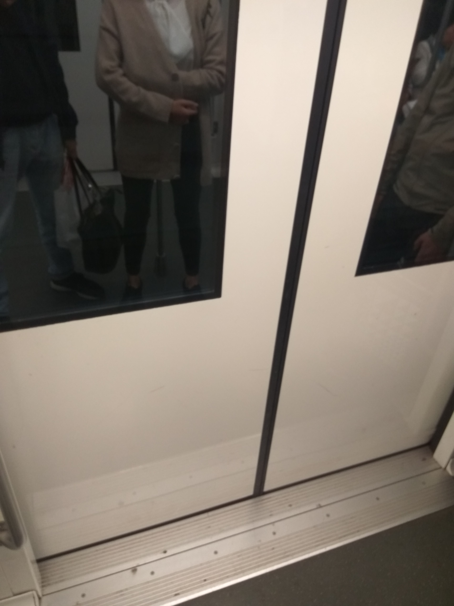
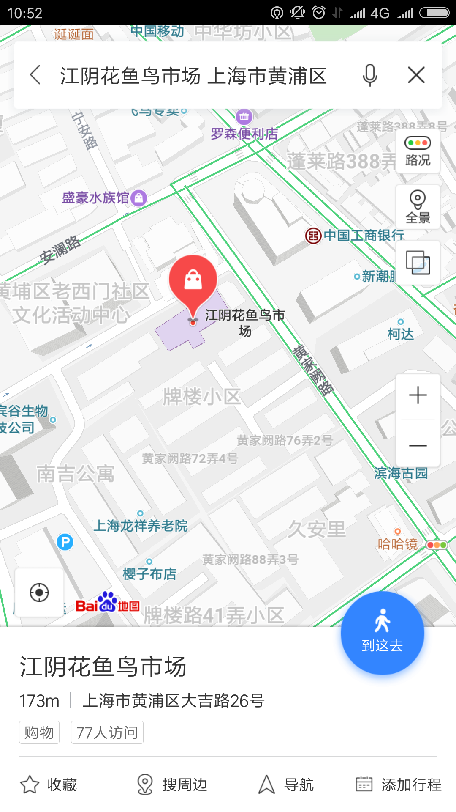
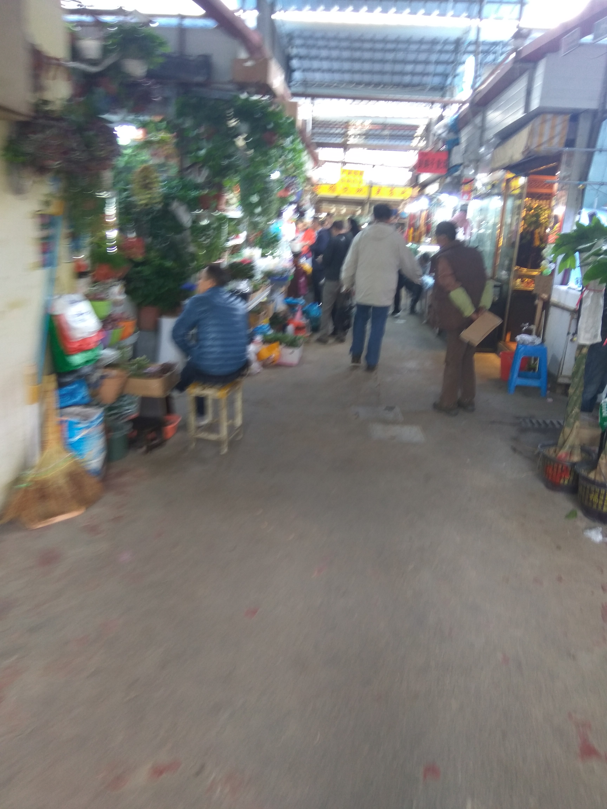
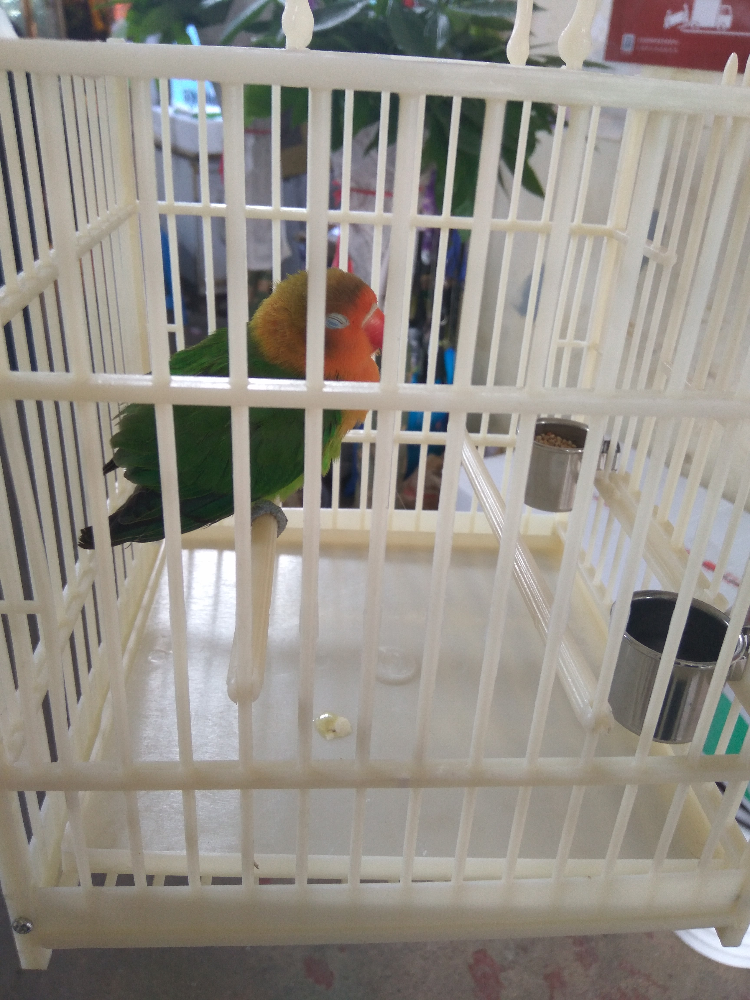
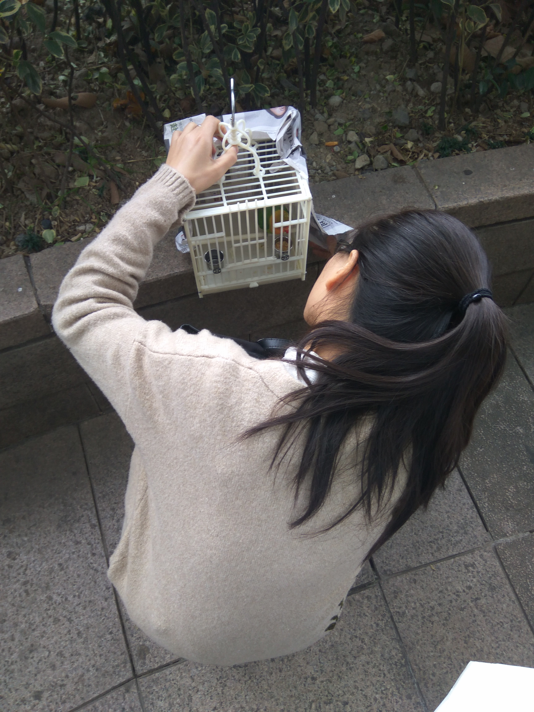
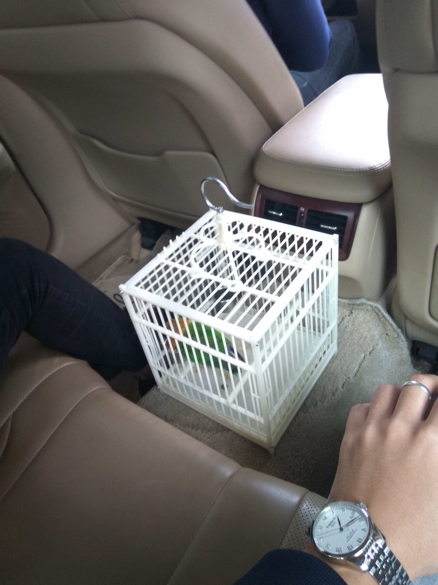

因为离着上海比较近，上周末决定去上海逛逛。虽然去过很多次了，但我还是喜欢租界的建筑风格。
从园区火车站坐高铁，不到20分钟的样子就到上海站了。下午南京路逛了逛，人山人海……周六晚跟志鹏大神吃了个饭，聊了聊工作和他申请PhD的一些问题。聊起他在日本的一些感悟，志鹏大神断言日本迟早要完，原因可能是他感觉日本太好玩了，容易让人玩物丧志……
晚上去外滩玩，还是满屏的人……感觉还是住在园区舒服，人相对少很多。
晚上回到酒店，就跟女票商量第二天去哪。其实该去的地方几乎都去过了，打开那些旅游app，推荐的地方都去过了。猜猜最后选择去哪了？
上海动物园我2012年的时候就来过一次。那次来上海玩起因也算是奇葩了，没玩几个地方，除了动物园和世博中国馆，就是窝在宾馆看电视……现在想想，我还是很喜欢动物的。半年前跟女票来上海玩，也是去了浦东的野生动物园，在北京的时候也是去北京动物园。翻看在北京动物园拍的照片，真是一肚子感慨。干IT这一行难道真的老得快？
本来应该在这里放几张在动物园拍的照片，但第二天早上出了点意外。在去地铁站的路上，发现了一个活物。
我在旁边看了一会，发现它好像以为后备箱里面有吃的，一直想进去，看样子是饿了。
我以前不知道女票还练过擒拿手……
抓到之后这只鸟很害怕，一直闭着眼。
我感觉放了它算了，带着它地铁都坐不了，更别提下午还要坐高铁回家。女票太有爱心，说放了会饿死，会冻死&×%…………%&……，你们懂吗？
好吧，那最后只好先买个鸟笼是吧，不能这么一直抓着。你说这上海人生地不熟的，便利店也不卖鸟笼。只好找一个最近的鱼鸟花卉市场了。
用百度地图找到了一个鱼鸟市场，好在不远，3站地铁。感谢百度，关键时刻还要靠你！大包小包的我先带着过地铁安检，然后女票就这样把鸟藏了一路，我真担心这鸟在她衣服上拉屎。
跟着导航跋山涉水，下了地铁我们一路疾走，奔向鱼鸟市场。左拐右拐直行又左拐，最后终于……到了一个住宅区？？问了一下旁边正在晾衣服的阿姨，花鸟市场10年前就没了……
还以为百度会干好事儿，当我没说……
再次跋山涉水，终于找到了一片卖花卖鸟的。
从卖鸟大爷那得知，这鸟品种是棕头牡丹鹦鹉。买了个笼子先把它放进去了。刚放进去就开始拉屎。
被这鹦鹉这么一折腾，动物园是没时间去了，而且高铁也坐不成了。网上查了不少带鸟过安检的方法，感觉都不靠谱。最后还要滴滴找了个顺风车。
在人民广场旁边等车，过路的人看到我们拎着个鹦鹉都很奇怪……
这货在车上吃了一路。